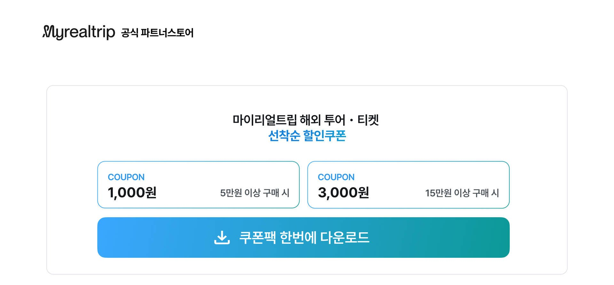
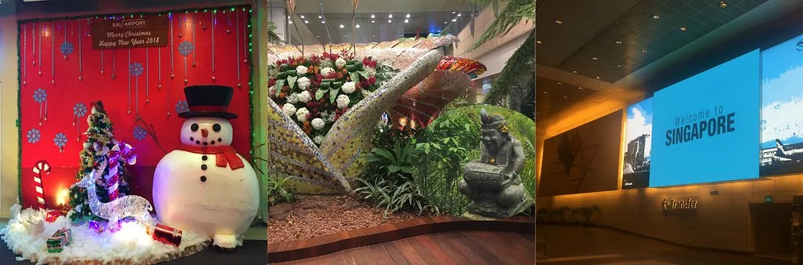
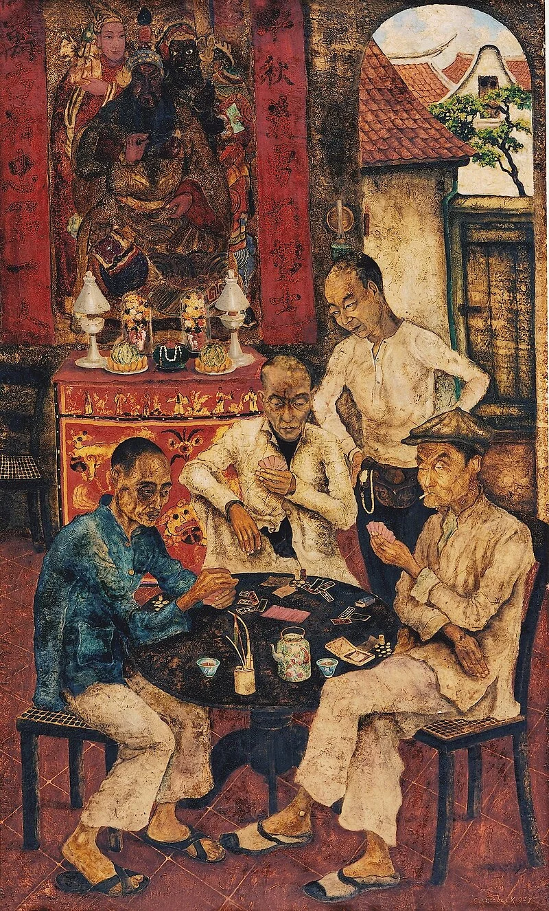
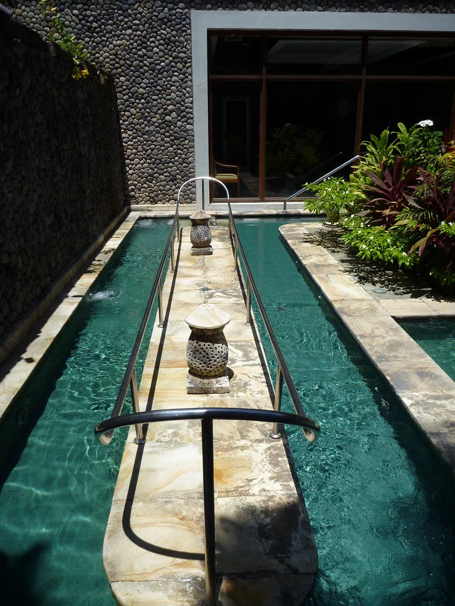
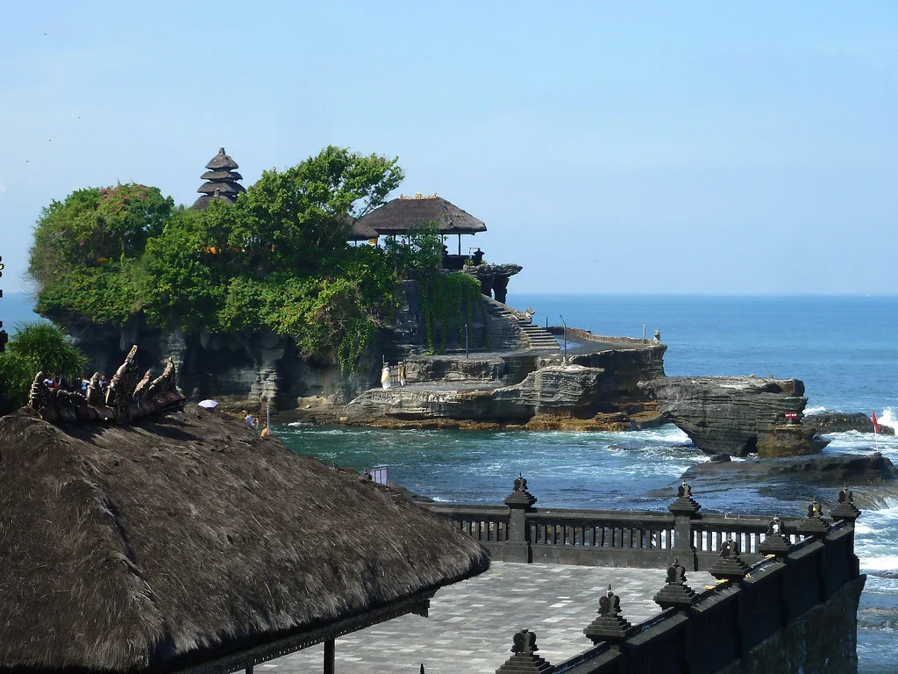
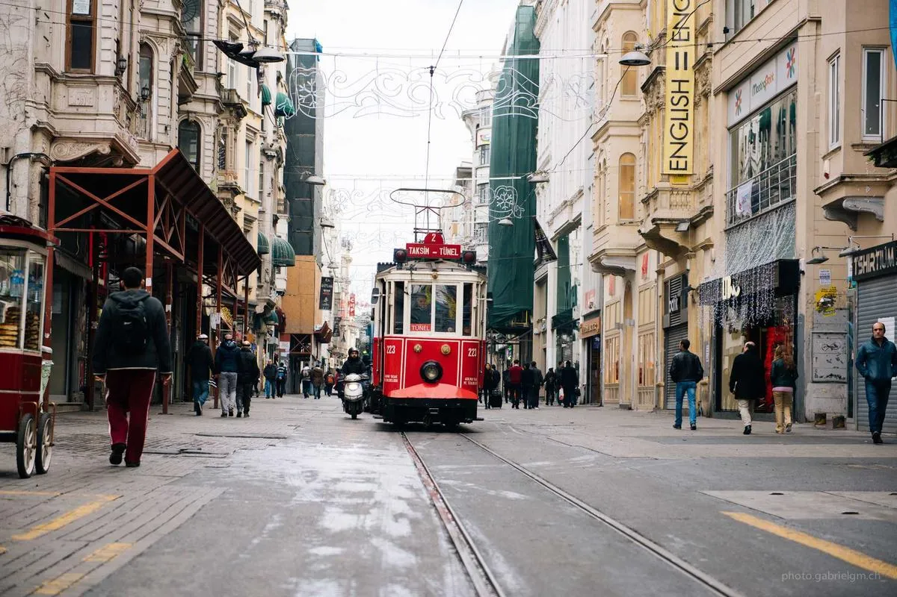
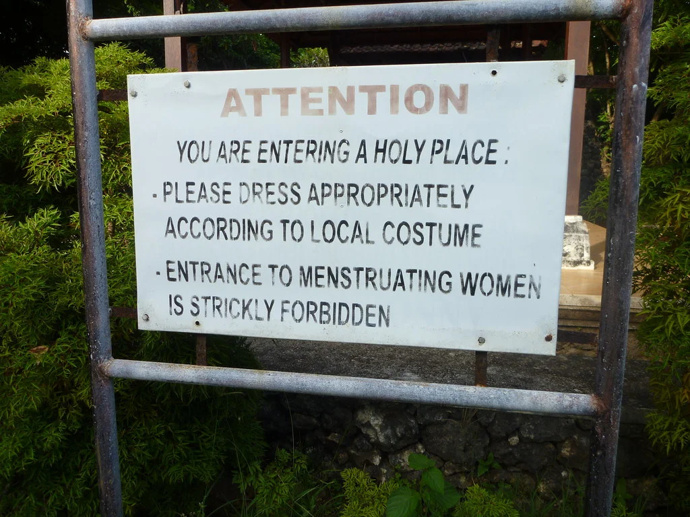
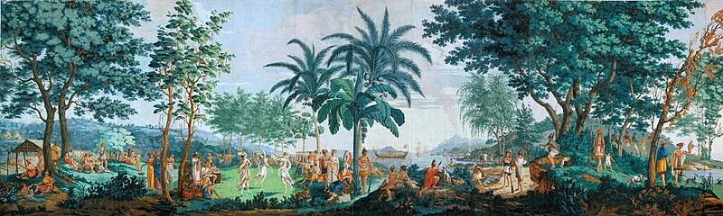
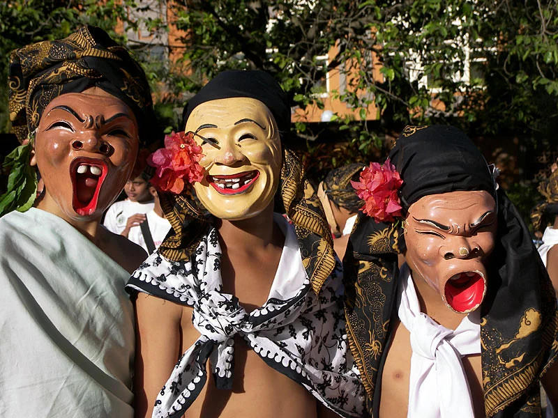
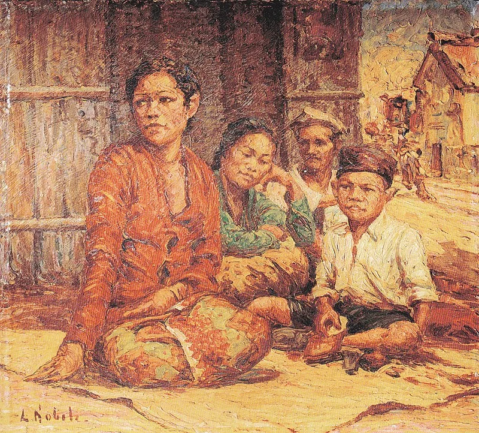

마이리얼트립 할인쿠폰 — 투어/티켓/숙소 최대 30% 할인









❓ 자주 묻는 질문
❓ 누사두아에서 꼭 봐야 할 전통 공연은?
누사두아 근처 발리니스 마을에서 전통 가옥을 구경할 수 있어요.
❓ 누사두아 미술관/박물관 추천해주세요
파라다이스 극장에서 발리 전통 공연을 볼 수 있어요. 150,000~300,000Rp.
❓ 누사두아 전통 공예 체험은 어디서?
리조트 내에서 문화 체험 프로그램을 제공하는 곳도 있어요.
❓ 누사두아 사원 투어 추천 코스는?
사원 방문 시 사롱 착용 필수! 긴 바지와 어깨를 가리는 옷을 입으세요.
📍 누사두아 문화/사원 추천
1. 파라다이스 극장
💰 가격: 공연 150,000~300,000루피아
📍 위치: 누사두아
💡 팁: 발리 전통 공연, 예약 추천
✍️ 블로거 팁: 리조트 셔틀을 활용하면 교통비 0원
💰 누사두아 가격 비교 (로컬 vs 투어 vs 호텔)
| 항목 | 💰 로컬 | 🎫 투어 | 🏨 호텔 |
|---|---|---|---|
| 발리 정식 | 80,000Rp | 120,000Rp | 200,000Rp |
| 나시고렝 | 25,000Rp | 45,000Rp | 80,000Rp |
| 뷔페 디너 | 500,000Rp | 600,000Rp | 800,000Rp |
| 마사지 (1시간) | 100,000Rp | 180,000Rp | 350,000Rp |
※ 로컬 = 직접 방문 시 / 투어 = 투어 포함 시 / 호텔 = 호텔 내 레스토랑 시
🗺️ 누사두아 추천 명소
- 누사두아 비치
- 발리 컬렉션 쇼핑몰
- 워터밤 파크
- 블로우 홀
- 파라다이스 극장
💎 숨은 명소
💎 숨은 명소: 누사두아 비치 동쪽 끝 — 스노클링 포인트, 관광객 거의 없음
🚗 누사두아 교통 정보
| 항목 | 정보 |
|---|---|
| 공항→누사두아 | 200,000루피아 (차량 40분) |
| 누사두아 시내 이동 | 리조트 셔틀 무료 |
🏨 누사두아 숙소 추천
| 등급 | 가격대 |
|---|---|
| 💰 예산형 | 게스트하우스 150,000~300,000루피아/1박 |
| 💰💰 중급 | 리조트 800,000~2,000,000루피아/1박 |
| 💰💰💰 고급 | 뮬리아 리조트 5,000,000루피아~/1박 |
💰 누사두아 예산 가이드
누사두아 예산 가이드를 정리하면, 숙소는 예산형 게스트하우스 150,000~300,000Rp/1박, 중급 부티크 호텔 500,000~1,500,000Rp/1박, 고급 뮬리아 리조트 뷔페 — 500,000Rp~ 수준이에요. 음식은 와룽도비엘 나시고렝, 뮬리아 리조트 뷔페 정도예요. 1박 2일 기준으로 예산형이면 500,000~800,000Rp(약 50,000~80,000원), 중급이면 1,500,000~3,000,000Rp(약 150,000~300,000원)면 충분해요.
🔑 현지인 꿀팁
사진 명소: 워터블로우 — 파도 칠 때 물기둥이 장관, 일몰 시간대 추천
💡 실전 팁
- 생과일 주스가 매우 저렴해요. 아보카도, 망고, 파파야 추천. 15,000~25,000Rp.
- 사진 촬영 전 허락을 구하세요. 특히 제사 중인 장면은 촬영 금지입니다.
- 식수는 반드시 생수를 사서 마시세요. 수돗물은 마시면 안 됩니다.
- 모기 기피제 필수. 열대 지역이라 모기가 많습니다.
- 팁 문화는 필수는 아니지만, 서비스 좋으면 10,000~20,000Rp 남기면 좋아요.